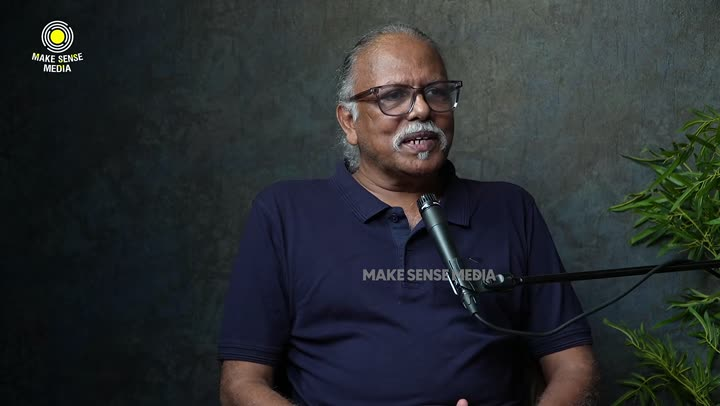
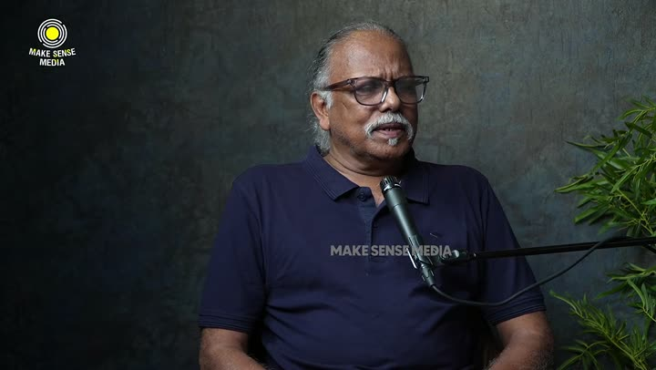

![Kaipps Cafe]()
Authored by Kaipp's AI Repo© 2026 Nishad Kaippally (Kaipps Cafe). All rights reserved.
This report was built with several private and public AI models. It is educational material: not for sale, and not to be reused or republished, including on any YouTube channel, without explicit permission.
A political interview with no theist in the room. The real test was whether Mytreyan applied rationalist standards to his own claims.

There is no religious opponent here. Praveen questions the freethinker Mytreyan about pseudoscience, EVMs, Iran versus the US, the farm bills and Indian democracy.
Mytreyan is at his best on checkable institutional facts. The 2023 law removed the Chief Justice from the Election Commission selection panel (00:28:01), and the farm bills were voice-voted in the Rajya Sabha without going to a committee (00:51:24).
Overall, Praveen comes out ahead. Mytreyan dodged a plain yes/no on Iran's repression (00:46:17), ranked Iran above the US on democracy (00:48:04) and used made-up figures (00:48:26).
The main lesson: Mytreyan's weakest moments use the same moves we criticise in apologists. He walls off his claims from disproof, dismisses inconvenient sources, applies a different standard to his own side, and doubts only what he dislikes.


Ordered by severity. Each one gave the other side an easy win.
These are the same tactics we expose in religious debates. They fail here for the same reasons.

Counted from the slide book's cards. A card corrected in SlideBook changes this tally too.